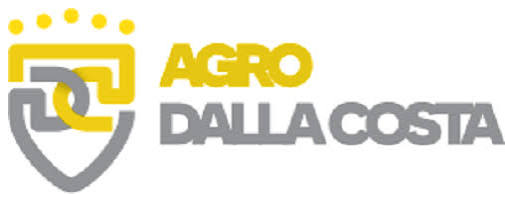
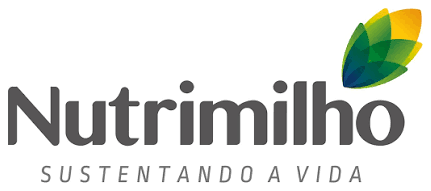

Consultoria contábil, tributária e estratégica
Informação técnica aplicada à realidade da gestão e às decisões do negócio.
CONSULTORIA CONTÁBIL • TRIBUTÁRIA • ESTRATÉGICA
Profissionais próximos à gestão, preparados para transformar informação, experiência e visão estratégica em decisões que geram valor.
Surgimos como uma opção a quem busca profissionais que estarão próximos ao corpo diretivo e atuando ativamente no auxílio das tomadas de decisões que visam alterar o rumo das Companhias.
A OneCon atua de forma próxima e humanizada junto às gestões empresariais, entendendo em detalhe as operações e as particularidades de cada negócio para entregar soluções mais assertivas.
A OneCon surge em março de 2021, na materialização de uma promessa realizada na vida dos sócios da Yahweh Professional Services, que oferecia serviços financeiros e contábeis, tendo um sócio responsável para cada tipo de serviço prestado.
Com o crescimento e a solidificação das atividades, surgiu a necessidade de segregar os serviços em CNPJs distintos, dando origem à OneCon.
Desde então, a empresa auxilia seus clientes nos mais diversos temas impostos pela legislação brasileira, agregando valor real junto a seus parceiros.
Atuação prática em diversos segmentos de negócio e exposição a cases complexos.
Atuação técnica e estratégica para empresas que querem compreender melhor seus números, riscos e oportunidades.
Informação técnica aplicada à realidade da gestão e às decisões do negócio.
Análise das oportunidades tributárias e identificação de créditos passíveis de recuperação.
Suporte para compreender impactos, riscos e oportunidades decorrentes das mudanças tributárias.
Atuação próxima ao corpo diretivo para apoiar decisões que podem mudar o rumo da companhia.
Atuação técnica na identificação, análise e estruturação de oportunidades de recuperação.
Diagnóstico preventivo para identificar inconsistências, riscos e pontos de atenção antes de decisões relevantes.
Profissionais com formação executiva e prática em empresas com faturamento bilionário.
Experiência em cases de diversos segmentos do mercado.
Atuação próxima às administrações, com compreensão das nuances específicas de cada operação.
Visão contábil, fiscal e estratégica integrada para apoiar decisões.
Empresas que confiam na proximidade, na experiência técnica e na visão estratégica da OneCon.


Um espaço para análises e conteúdos sobre contabilidade, tributação, gestão e os impactos das mudanças na legislação.
“Agregar valor real aos clientes e elevar o patamar de seus negócios.”
Conte-nos um pouco sobre seu desafio. A OneCon está pronta para estar próxima da sua gestão.